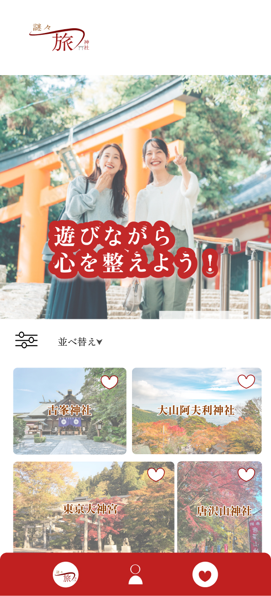
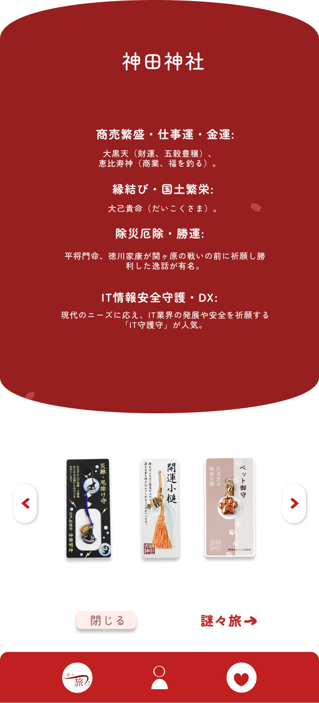
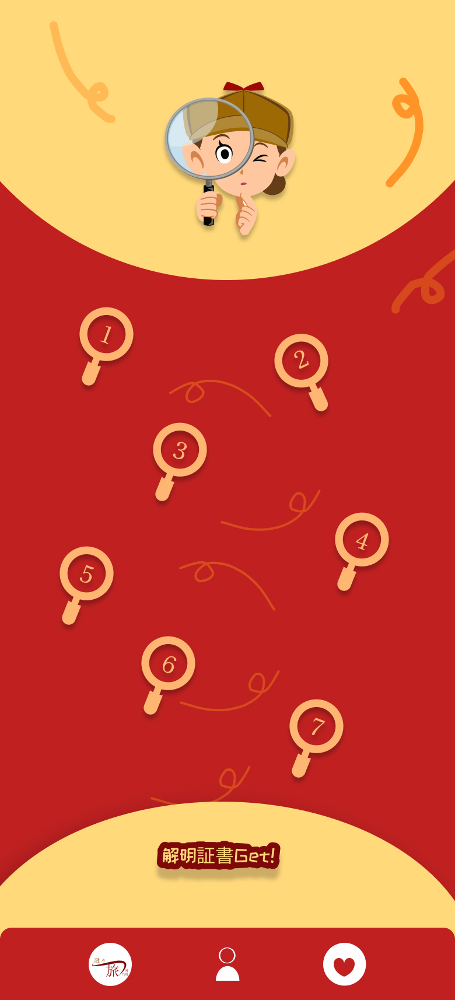
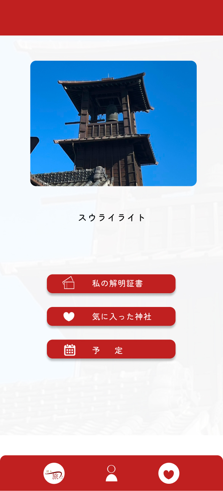
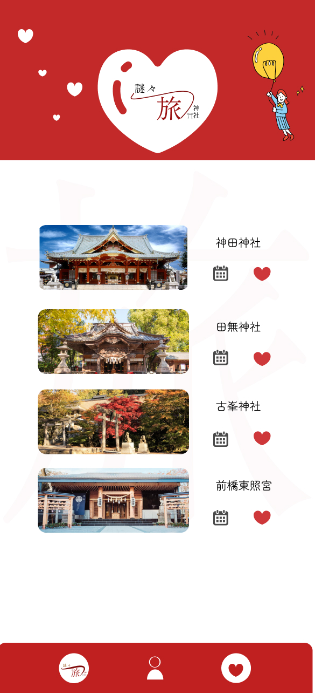
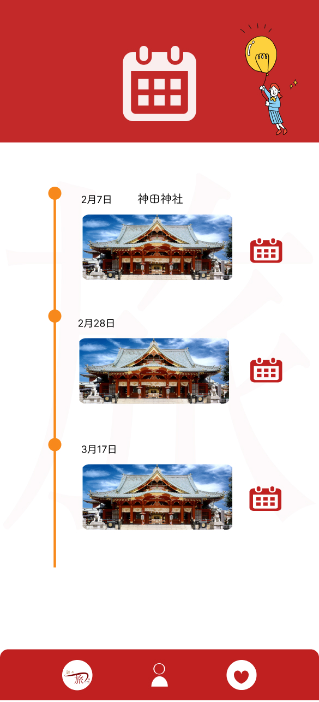

作品概要
境内でなぞなぞをすることでリラックスできる。
悩み、ストレスを抱えてる20代後半〜30代
企画・デザイン
2週間
miro、Figma
デザイン
考える謎解きではなく、 探すゲーム感覚の体験で神社の中を巡り、 手がかりを探す遊び方で「考える」謎々より「見つける」楽しさを重視した上で、 神社の情報につなぎますので、 自分が好きな神社を選ばられ、ハートにつけて、 予約にも追加ですることができます。
工夫した点
謎解きを「考えるゲーム」ではなく、 「探すゲーム」として設計し、誰でも気軽に楽しめる体験を目指しました。 また、神社の情報を自然に知ってもらえるよう、 探索の流れの中で情報が目に入るUIを意識しました。 お気に入り登録や予約機能も設け、体験後の行動につながる導線を工夫しました。
学んだこと
ユーザー視点で体験全体を設計することの重要性を学びました。 単に機能を追加するのではなく、 「どのような気持ちで利用し、 次にどの行動を取るか」を考えながらUI・UXを設計することで、 より使いやすいサービスになることを学びました。
完成デザイン
神社巡りと謎解きを組み合わせ、
楽しみながら神社の魅力を知ることができる探索型アプリをデザインしました。





